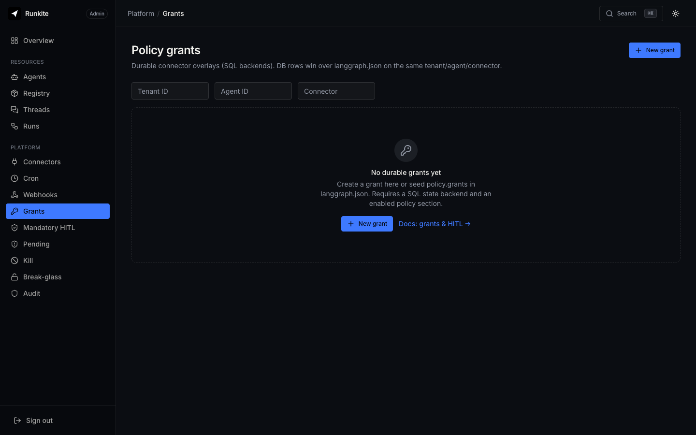

Govern
PDP / Cedar
Runkite does not ship a proprietary policy product. Point policy.webhook at your PDP; the plane fail-closes and enforces allow / deny / pending on connectors.
What it is
A sync decision webhook: the plane POSTs policy.decide JSON (optional HMAC), expects allow / deny / pending,
and applies the result on connector tool paths. Cedar, OPA, ABAC, or a 50-line script all work if they speak the envelope.
Why it is here
Enterprises already have a PDP. The plane’s job is to gate side effects and audit — not to replace your policy stack. Mandatory HITL still overrides an “allow” for defense in depth.
How to implement
- Enable
policy(presence of the section fail-closes connector access). - Set
policy.webhook.url(+ optional secret / timeout). - Start from
examples/policy_webhook/(deny / pending + HMAC self-check). - Layer grants + mandatory HITL in Admin; watch Pending / Audit when the PDP returns pending.
"policy": {
"default_effect": "deny",
"webhook": {
"url": "http://127.0.0.1:8099/decide",
"secret": "dev-policy-secret",
"timeout_ms": 2000
}
}
In the product

What to expect
- Fail-closed — webhook errors and timeouts deny (or pending per contract), never open the gate silently.
- Scope — governs connectors / admission on the plane, not arbitrary in-graph tools that never call a connector.
- Break-glass — timed bypass skips Decide; audit notes when mandatory HITL would have matched.
Reference: docs/trust-governance.md · Grants & HITL · Kill & break-glass